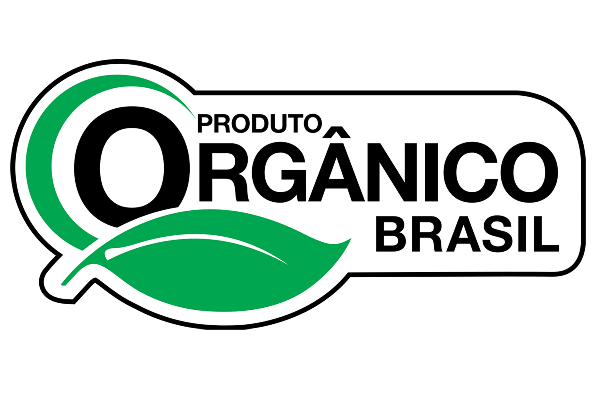

FSC
A Certificação Orgânico Brasil é para produtos agrícolas e alimentares. Garante que os produtos estão isentos de contaminantes e insumos que colocam em risco o meio ambiente e a saúde do produtor e consumidor.
A Certificação Orgânico Brasil é para produtos agrícolas e alimentares. Garante que os produtos estão isentos de contaminantes e insumos que colocam em risco o meio ambiente e a saúde do produtor e consumidor.